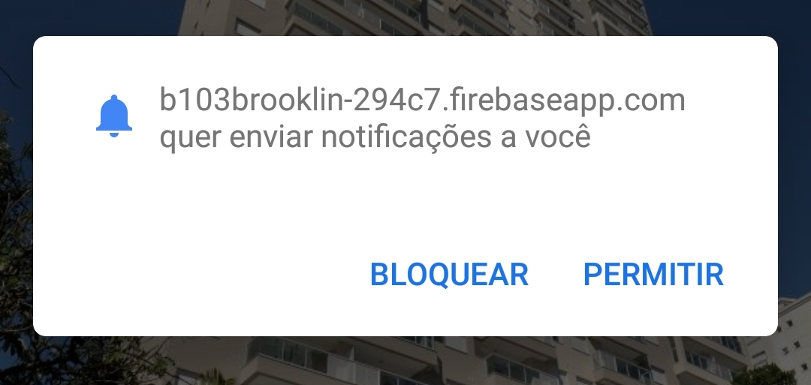

B103 Brooklin
v1.0.0
SOBRE
O B103 é um aplicativo web (PWA) de comunicação do condomínio com os seus moradores.
FUNCIONAMENTO
Receba em tempo real mensagens da administração/zeladoria do condomínio.
ADICIONAR COMO APLICATIVO
Por ser um aplicativo web (PWA), o B103 pode ser adicionado à sua lista de aplicativos.
- no Android
Para quem acessa o B103 do Chorme, basta aceitar a opção abaixo:
- no iPhone
Para quem acessa o B103 do Safari, precisa seguir os passos:
1) Procure pelo seguinte ícone:
2) Procure pela opção:
NOTIFICAÇÕES
O aplicativo possui o recurso de enviar notificações, assim que uma nova mensagem é enviada.
Basta abrir o B103 e deixá-lo em segundo plano, para receber as notificações.
O recurso de notificações em aplicativos web (PWA) está disponível apenas no Android.
A Apple ainda trabalha para disponibilizar esse recurso para o iPhone.
Habilitar notificações no Android
Para quem acessa o B103 do Chrome, basta permitir a opção abaixo:
